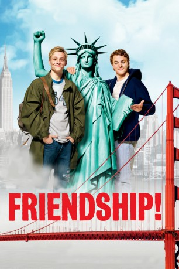

#8052 Friendship!
 
 IMDB-Wertung: 6.6 / 10
IMDB-Wertung: 6.6 / 10  Tomatometer: 97
Tomatometer: 97  Metascore: 0
Metascore: 0 
Deutschland, 1989: Die Mauer fällt, die Menschen jubeln, David Hasselhoff singt am Brandenburger Tor, und ganz Berlin ist eine einzige Party. Auch Veit freut sich: Mit seinem Begrüßungsgeld will er nach San Francisco, zum westlichsten Punkt der Welt. Zumindest erzählt er das seinem besten Freund Tom, der prompt das große Abenteuer wittert und unbedingt mitkommen will. Doch in Wahrheit sucht Veit seinen Vater, der in die Staaten ausgewandert ist, als Veit noch ein Kind war. Nur ein Bündel Postkarten, abgestempelt an Veits Geburtstag in einem Postamt in San Francisco, zeugen noch von dessen Existenz.
Jahr: 2010
Dauer: 108 Minuten
FSK: 6
Land: Deutschland Studio: Sony Pictures ReleasingTonspuren:
Untertitel: Deutsch,
Auflösung: 1080p (1920x816) Größe: 7997 MB
Genre: Komödie, Abenteuer
Regisseur: Markus Goller
Drehbuch: Oliver Ziegenbalg
Soundtrack: Peter Horn, Andrej Melita, Martin Probst
Darsteller:
 Matthias Schweighöfer als Tom Kleeberg
Matthias Schweighöfer als Tom Kleeberg- Alicja Bachleda als Zoey
 Todd Stashwick als Darryl
Todd Stashwick als Darryl- Peter Macon als Hope
 Kevin Rankin als Marvin
Kevin Rankin als Marvin- Cameron Goodman als Amber
- Kimberly J. Brown als Dorothee
- Cocoa Brown als Polizistin
- Dwayne Adway als Hunter
 Kirsten Block als Ursel
Kirsten Block als Ursel Vic Browder als Einwanderungsbeamter
Vic Browder als Einwanderungsbeamter- Martin Ewens als Gascoigne
 J.D. Garfield als Bürgermeister von Joplin
J.D. Garfield als Bürgermeister von Joplin Catherine Haun als Sekretärin
Catherine Haun als Sekretärin Alex Knight als Polizist
Alex Knight als Polizist- Richard Sellers als Student
- Shenita Moore als Hope's Ehefrau
- Pab Schwendimann als Schwuler Trinkkumpane
 Chris Browning als Jonathan
Chris Browning als Jonathan John Tormey als Bus Driver
John Tormey als Bus Driver- Gerald Brodin als Mr. McBride
- Jerry Miller als Obdachloser #1
- Anthony Baggette als Obdachloser #2
 Tina Borek als Girl at Bar (uncredited)
Tina Borek als Girl at Bar (uncredited)- Leonid Brezhnev als Himself (archive footage) (uncredited)
 Steven Ray Byrd als Red Shirt Disco Guy (uncredited)
Steven Ray Byrd als Red Shirt Disco Guy (uncredited)- Brian D. Coats als African-American Guy (uncredited)
- Hayley Derryberry als 80's Sweater Girl (uncredited)
 Natalie Gal als Manne (uncredited)
Natalie Gal als Manne (uncredited) David Hasselhoff als Himself (archive footage) (uncredited)
David Hasselhoff als Himself (archive footage) (uncredited) Karen M. Hudson als Hippie (uncredited)
Karen M. Hudson als Hippie (uncredited)- J.D. Jacoby als Clubber with Cowboy (uncredited)
 Edward M. Kelahan als Pedestrian (uncredited)
Edward M. Kelahan als Pedestrian (uncredited)- Laina Loucks als Daughter (uncredited)
- Kate Miller als Mannequin (uncredited)
 Paul J. Porter als Gay Cowboy (uncredited)
Paul J. Porter als Gay Cowboy (uncredited) J. Nathan Simmons als Cowboy (uncredited)
J. Nathan Simmons als Cowboy (uncredited)- Friedrich Mücke als Veit Jagoda
- Hans-Uwe Bauer als Falker
- Justus Kammerer als Tom 12 Jahre
- Adrian Moore als Veit 12 Jahre
 Gitta Schweighöfer als Tom's Mutter
Gitta Schweighöfer als Tom's Mutter- Michael Schweighöfer als Tom's Vater
- Barbara Mayfield als Bedienung Tennessee Diner
- Greg Hewett als Jerry
- Scott Corley als Strip Club Besitzer
- Julia Thudium als Postangestellte
- Tim D. Janis als Zollbeamter Steve
- Luis Figueroa als Busticket-Verkäufer
- Udo Hoffmann als Rektor
Datei: X:\2010(A-F)\Friendship! (2010, FSK6, 1920x816).mkv seit 19.01.2018
Festplatte: HD 2009(G-Z)-2010(A-F)
 Es gibt insgesamt 95 Filme in der Gruppe '2010(A-F)'
Es gibt insgesamt 95 Filme in der Gruppe '2010(A-F)'